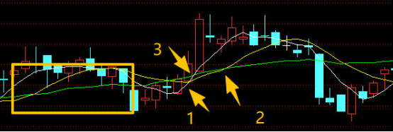
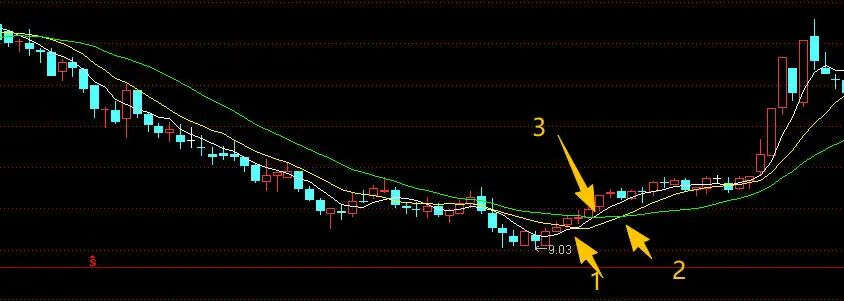
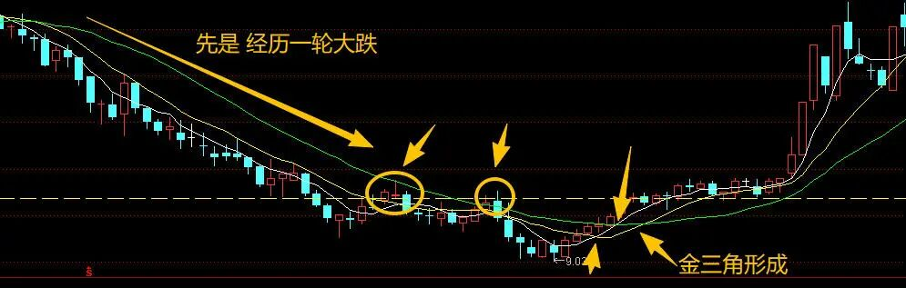
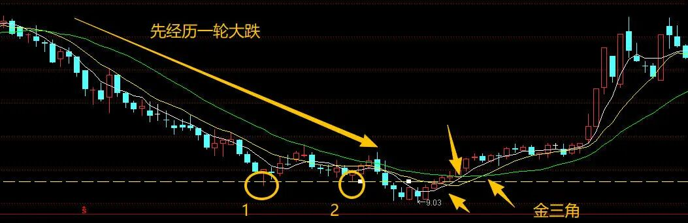

最近跟大家交流了：抄底“金三角”这个技术，指数或者个股，经历一轮大跌后，要想由下跌趋势，转化为上升趋势，就一定会在底部出现一个“金三角”。注意我这段话，开头是，经历一段大跌后，也就是跌幅越大，金三角成功的概率越高。
为什么？跌幅越大，洗盘越彻底，后面拉升的意愿就更强烈呀。
有读者找了一些这样的图形，让我看看，为什么明明是“金三角”，股价后面跌了？如下图

5日线，上穿10日线（箭头1）所指，5日线继续上走，上穿20日线（箭头3），10日线，上穿20日线（箭头2）。这种企业，出现了“金三角”，但后面股价很快就跌了，这是为什么？
因为：前面（黄色长方体）这波行情下跌太少了，没有出现我们讲的：行情经历一波大跌，这仅仅是一个小幅回撤而已。
大家记住：金三角的核心作用，是判断行情是否反转。行情的波动一定要大，越大越好。
像这种，波幅很小的震荡行情，根本不适合用“金三角”。 你可以理解为：金三角是关二爷手里的大砍刀，在空间宽阔时，威力无限，可以短时间内砍倒大批敌人。但如果在棺材一样的空间里，这把刀，毛用没有，还不如一把螺丝刀好用。

用金三角抄抄底时，尽量找上面这种，前期趋势彻底走坏，经历一轮大跌的，后面再出现“金三角”时，往往就意味着：趋势反转，也就是：新的资金，要开启新一轮的上涨。
在这里，还要纠正大家一个思路：我发现，有投资者从学了底部金三角后，他立即认为：只要股价出现了，金三角，就会立即翻着跟头往上走，天天都是大阳线。
这怎么可能呢？
出现金三角后，股价也会有回调，也会有回落，也会有震荡，这都是很正常的。
大家一定要清楚金三角的意义：他是帮助我们判断行情是否由下跌趋势，转化为上升趋势的。只要出现这个信号，就可以判断为：趋势转暖。趋势转暖了，再考虑入场，趋势没转暖，继续冬眠。
入场买股，精确买点，是另一种技术。
就像你打算春天去旅游，如何判断春天呢？就看周围的桃花（底部金三角），如果桃花开了，你就知道：春天到了，天气变暖了。你知道春天了，可以旅游了，然后再决定，是骑摩托还是骑自行车，车还是步行去旅游。
写到这里了，我就再捎带讲点，出现底部金三角后，如何寻找精确买点，看下图。

上面这张图，是一家企业，显示经历一轮大暴跌，大跌后，慢慢的形成一个底部金三角。大跌的越狠，金三角的意义越强。
金三角形成以后，不是无脑入场，炒股要这么简单，大家都成富豪了。
形成底部金三角后，接着就是等买点。
等买点，无非就2个思路。
①：等突破底部重要压力，再入场。
②：等回踩底部重要支撑，再入场。
我们先讲第一个，等突破底部重要压力，再入场。也就是上图中的水平黄色线，我已经做了标记。为什么黄色线是底部重要压力呢？
底部就不用说了，很直观。
为什么是重要压力呢？
因为股价在触底之前，有过两次反弹，每次都是反弹到黄色线附近后，被死死压制，后面才又创新低。所以：黄色线附近压力就是很强。
当底部金三角形成后，股价也到了黄色线附近，此时千万不要着急入场，因为黄色线附近压力很强，你在黄色线下方入场，很容易出现：刚入场，接着就回落，被套的情况。
最好的思路是：等股价突破站稳黄色线后，再入场。此时，黄色线，由强压力，转化为强支撑。此时安全系数会相对较高。
篇幅问题，本想下篇再写②：等回踩底部重要支撑，再入场。但想想，还是一篇文章写完吧，写了这么多，大家可一定得给个小红心支持呀，情绪价值到位了，可以刺激我输出更多干货文章。
还是上面这种图，我把上方压力线去了，找出等回踩的位置。

还是这家企业，我们继续看，他在底部形成金三角后，我们要执行第②个思路，等回踩底部重要支撑。图中黄色线，就是他的底部重要支撑。底部也不用说了，很直观。
为什么下方黄色线，是重要支撑呢？
股价在探底过程中，有过2次反弹，每次都是触及这条黄色线后，开始反弹的。说明：黄色线附近，有很强的支撑，没有支撑的话，一下子就跌破了。
在底部形成金三角后，股价已经超过了下方黄色线位置，如果你想等回踩入场的话，就等股价回踩到下方黄色线，此时安全系数最高。
以上就是：当股价出现底部金三角，投资者想抄底时，如何找精确买点的思路，这也是我自己一直用的思路。
感觉有收获，请点亮小红心支持一下呗。
“本文仅为个人交易逻辑复盘与技术交流，不构成任何投资建议。股市有风险，决策需谨慎。”